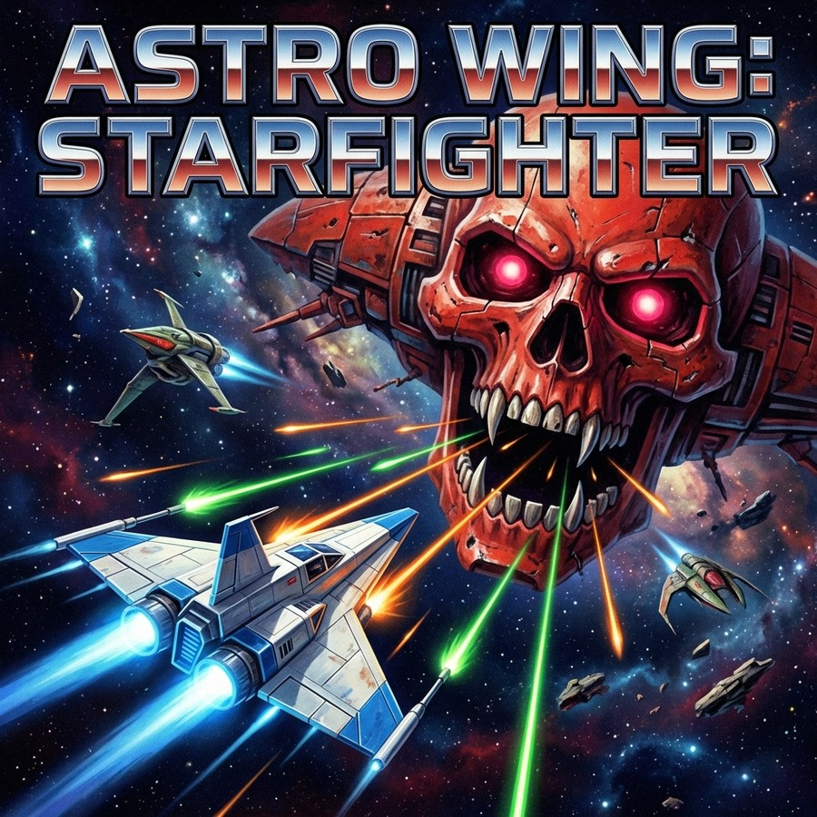
Attention, Commander!
The galaxy is in peril. The Evil Empire has scattered the five ancient Relics of Power across the cosmos. These artifacts are the key to ultimate power, and if they remain in enemy hands, the universe is doomed.
You are the pilot of the M-78 Starfighter, the most advanced ship in the fleet. Your orders are simple: warp to each sector, break the enemy blockade, defeat the Guardian that holds the sector's Relic, and use each Relic to upgrade your ship for the final confrontation with the Empire's Flagship.
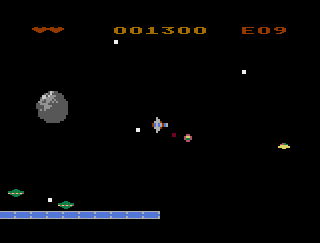
But be warned: the asteroid fields are treacherous, and the Empire's Guardians are waiting.
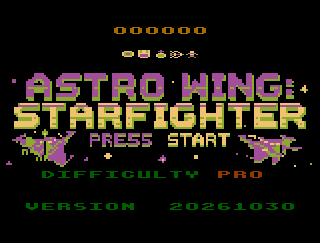
Press the button (or Reset) to begin. Every so often the title screen shows the high score tables; press the button to come back to the title.
On Easy the enemy flies slower and fires less often, the asteroids drift slower, your shots hit a little more easily, and your shields are fully restored after every sector. Each difficulty has its own high score table.
Astro Wing is played with the joystick that came with your Atari 7800. Only one button is used.
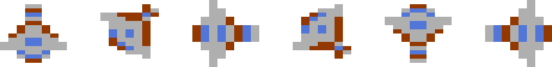
Space has no brakes. Your Starfighter flies by real momentum: a burst of thrust keeps you moving until your drift slowly dies away, and turning does not change the way you are moving, only the way you are pointing.
Your ship always stays in the middle of the screen, and the battle moves around you. Each sector is a vast field of space that wraps around: fly far enough in any direction and you will come back to where you started.
Your blasters fire up to four shots at once. Each shot flies for about a second.
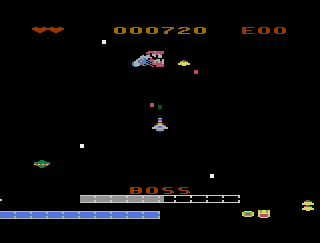
1 2 3 4 5 6Your shields start each ship at full strength. Every hit wears them down:
| Enemy shot | 1 |
| Ramming an enemy ship (it is destroyed) | 2 |
| Hitting an asteroid (you are thrown clear) | 10 |
| Hitting a Guardian (you are thrown clear) | 20 |
When your shields run low, your ship flashes. When they run out, the ship is lost. With a spare ship you carry on in the same sector, shields full, and every enemy you destroyed still counts.
Every fourth green Interceptor you destroy leaves an energy orb. Fly into it for 10 points of shield. Be quick: it fades after four seconds.
Clearing a sector restores half your shields (Pro) or all of them (Easy). You start the game with 3 ships.
Hunts you in a loose squadron, circling around you and firing whenever it has a line on you. Faster and quicker to fire in later sectors.
Sweeps across the sector in a long weaving run and fires on the diagonal. Every fourth one you destroy leaves an energy orb.
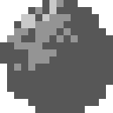
Indestructible. It soaks up shots from both sides, and crushes any enemy ship in its path (that counts as a kill for you). Asteroids drift faster from Sector 3.
Fighter and Guardian shots fly in eight directions, aimed at where you are. Keep moving.
Destroy enough enemies to bring the counter to 00 and the sector's Guardian warps in somewhere in the sector. Its health bar appears at the bottom of the screen.
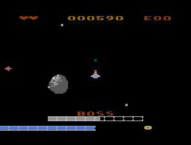
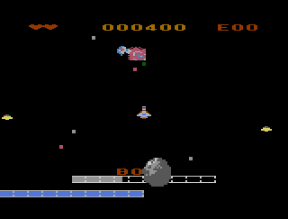
Destroy 20 enemies. The enemy is slow here: a good place to learn to fly.
Guardian: a lone sentry that fires slowly. 17 hits.
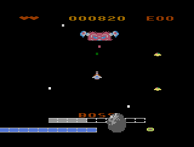
Destroy 40 enemies. They fly and fire faster.
Guardian: a wider warship that launches fighters. 20 hits.
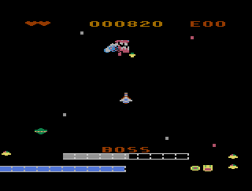
Destroy 60 enemies. The asteroids come at twice the speed.
Guardian: fires rapidly. 25 hits.
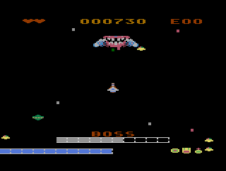
Destroy 80 enemies, now at full speed.
Guardian: a twin-hulled warship. 34 hits.
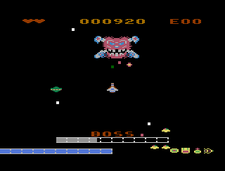
Destroy 99 enemies, the fiercest yet.
Guardian: the Flagship's escort, as big as the Flagship itself. 50 hits.
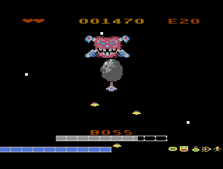
No counter here: the Empire's Flagship is waiting from the start.
The Flagship hurls asteroids at you and launches fighters. 100 hits. Bring every upgrade.
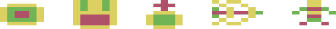
Each Guardian you defeat surrenders a Relic of Power, and the Relic upgrades your ship:
| Sector | Reward |
|---|---|
| 1 | Increased firepower: your blasters fire faster. |
| 2 | Increased speed: a higher top speed. |
| 3 | Max health up: shields fully restored. |
| 4 | Faster recharge: faster still. |
| 5 | Extra life: one more ship. |
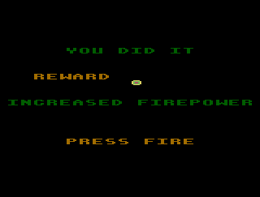
Defeat the Flagship in Sector 6 and the galaxy is saved.
| Fighter | 100 |
| Interceptor (shot down / rammed) | 250 / 100 |
| Enemy crushed by an asteroid | 50 |
| Each hit on a Guardian | 10 |
| Guardian or Flagship destroyed | 5,000 |
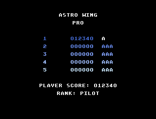
At the end of a game, a score in the top five goes on the table: push the joystick up or down to choose each letter, and press the button for the next.
With a High Score Cartridge, SaveKey or AtariVox attached, your scores are saved.
| Score | Rank |
|---|---|
| 100,000 | Ace |
| 50,000 | Commander |
| 25,000 | Captain |
| 10,000 | Pilot |
| below 10,000 | Cadet |
Good luck, Starfighter. The galaxy is counting on you.
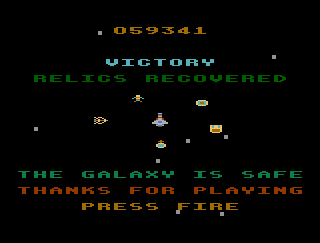
Six sectors. Five Relics of Power. One Starfighter against the Empire.
Turn, thrust and drift through wrap-around space in a shooter with real momentum, and bring the Relics home.
Astro Wing: Starfighter © 2026 Jason Rowe. Developed with
7800basic.
Atari and Atari 7800 are trademarks of their owners. This is an
independent game, not made or endorsed by Atari.